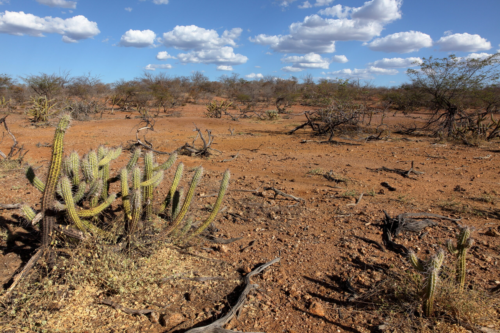
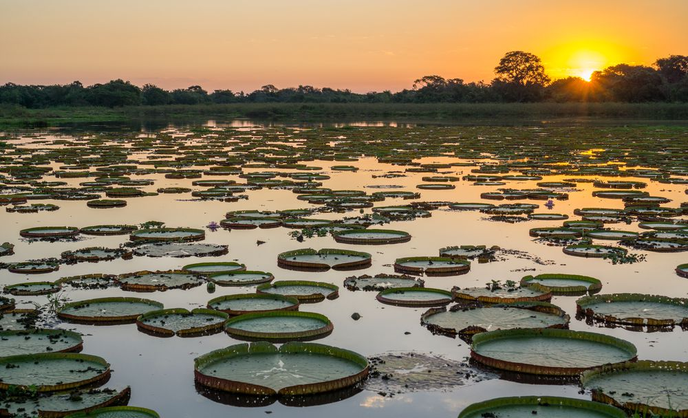
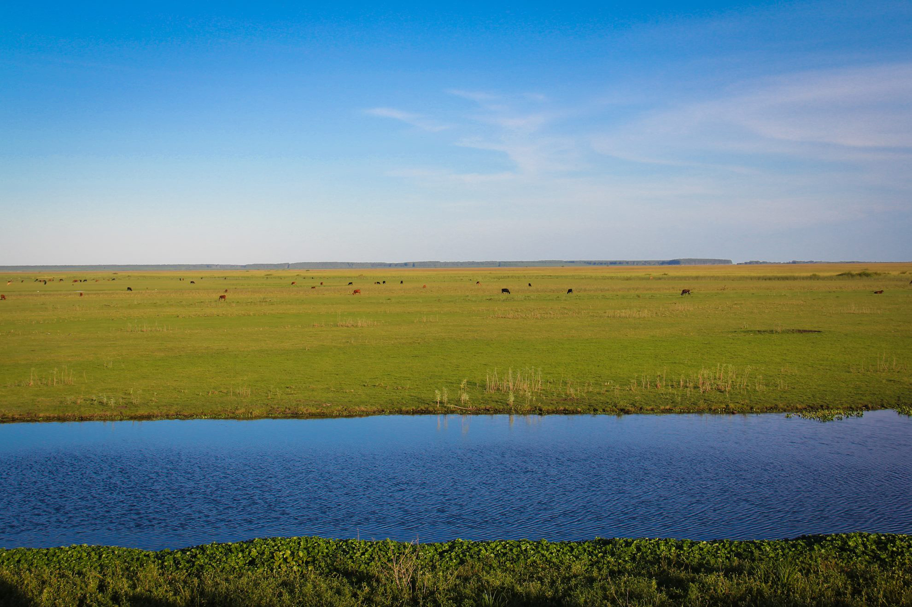

Diversidade dos Biomas
O Brasil possui seis grandes biomas, cada um com características, espécies e paisagens diferentes.

Amazônia
A Amazônia é o maior bioma brasileiro e possui uma enorme variedade de espécies de plantas e animais. Sua vegetação também possui um papel importante na regulação do clima e do ciclo da água.
Maior Bacia Hidrográfica
Cerrado
O Cerrado é conhecido como o berço das águas, pois possui muitas nascentes importantes para diferentes rios brasileiros. Sua vegetação é formada por árvores, arbustos e gramíneas.
Savana Brasileira
Mata Atlântica
A Mata Atlântica está presente principalmente próxima ao litoral brasileiro. Mesmo tendo sofrido grande redução ao longo dos anos, ainda apresenta uma importante diversidade de espécies.
Grande Biodiversidade
Caatinga
A Caatinga é um bioma exclusivamente brasileiro. Está adaptada ao clima quente e seco do Nordeste e possui espécies que conseguem sobreviver durante longos períodos com pouca água.
Único Bioma Exclusivo do Brasil
Pantanal
O Pantanal é uma das maiores áreas úmidas do planeta. Seu ciclo de cheias e secas influencia diretamente a vida de diversas espécies de animais e plantas.
Maior Planície Alagável
Pampa
O Pampa está localizado principalmente no Rio Grande do Sul e é caracterizado por grandes áreas de campos naturais. Possui diversas espécies adaptadas a esse tipo de vegetação.
Campos Sulinos